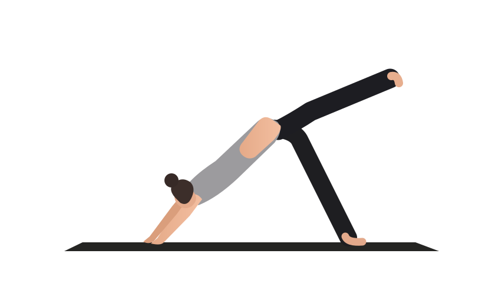

پایه
آشنایی با حرکت و تنفس
انتخاب ↗
اینجا میتوانی سرعت را کم کنی، به نفس برگردی و حرکت را دوباره پیدا کنی.
درخواست جلسهٔ آزمایشیکف چوبی، نور ملایم و زمانی برای تمرین با ریتم خودت. پیش از کلاس، نیاز و تجربهات را با مربی در میان بگذار.
 انتخاب این طرح
انتخاب این طرح